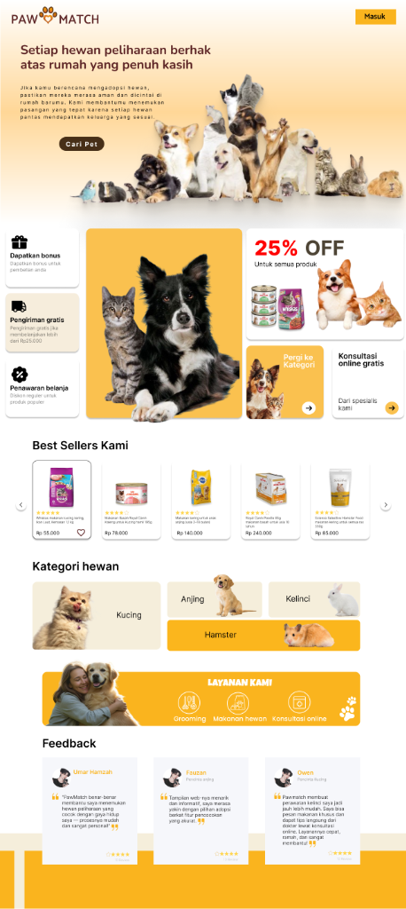

pawmatch.app

PawMatch adalah aplikasi yang membantu pengguna menemukan hewan peliharaan yang sesuai dengan preferensi dan gaya hidup mereka. Pengguna bisa memilih jenis hewan, ras, umur, ukuran, jenis kelamin, hingga karakter yang diinginkan.
UI/UX Concept
Matchmaking